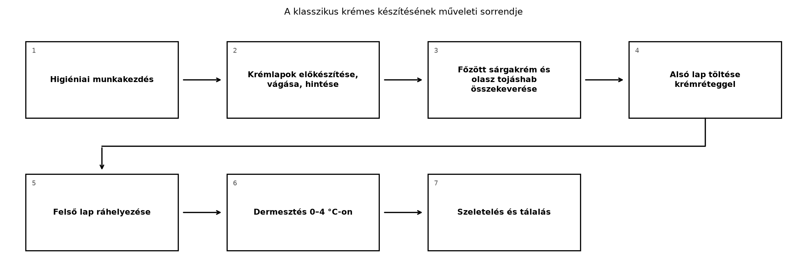

Egy cukrászüzemben a krémes egyszerre a hagyományos pult egyik alapdarabja és az élelmiszerbiztonság egyik legérzékenyebb terméke. Reggel megsütik a vajas krémlapot, elkészítik a főzött sárgakrémes-tojáshabos tölteléket, összeállítják a süteményt, majd hűtés és porcukorral hintés után szeletelik. Ha a krémet nem dermesztik meg rendesen, a szeleteléskor kifolyik. Ha a krémlapot nem szurkálták meg, féloldalasan felpúposodik. Ha a kész krémes 25 °C-os pultban áll órákig, a tojásos-tejes krém valós mikrobiológiai kockázattá válik. Ez az alfejezet a krémesek teljes technológiáját tanítja: vajas/leveles tésztából a klasszikus krémeseket, forrázott tésztából a képviselőfánkot, eklert és a tejszínes profiterolt.
Definíció. A krémesek olyan kikészített sütemények, amelyekben megsütött tésztalap vagy tésztahüvely közé főtt, felvert, dermesztett, krémes vagy vajas töltelék kerül, majd a terméket hűtve dermesztik, felszeletelik és gyakran porcukorral, fondánnal vagy bevonóanyaggal fejezik be.
A krémeseket a tészta és a töltelék szerint csoportosítjuk:
| Szempont | Csoport | Példa |
|---|---|---|
| Tészta | vajas/leveles tészta | klasszikus krémes, francia krémes |
| Tészta | forrázott tészta | képviselőfánk, ekler, profiterol |
| Töltelék | főzött sárgakrém alappal, tojáshabbal könnyítve | klasszikus krémes |
| Töltelék | tisztán főzött sárgakrém/vaníliakrém | képviselőfánk, ekler |
| Töltelék | felvert tejszínes krém | tejszínes profiterol, tejszínes ekler |
A krémesek közös technológiai jellemzője, hogy a tésztát előbb teljesen ki kell hűteni, mielőtt krémmel töltjük. A meleg tészta felmelegíti és híggá teszi a krémet, a hab összeesik, a tészta megpuhul. A töltött terméket hűteni kell, hogy a krém dermedjen, és a krémet csak dermedés után szabad szeletelni vagy tálalni.
A krémesek két alapvető félkész tésztája a vajas/leveles krémlap és a forrázott tésztahüvely. A krémlapot a Vajas és leveles tészta feldolgozása és sütése alfejezet szerint készítjük. A forrázott tésztát a Forrázott tészta és tésztahüvelyek alfejezet szerint készítjük.
A krémlapnál a jó leveles szerkezet és az egyenletes vastagság a fő cél. A megsütött lapot hagyjuk hűlni, mert a vágás és a töltés csak hideg lapon végezhető biztonságosan. A forrázott hüvelynél a közepes falvastagság és a jól kiszáradt belső üreg a cél. A túl vastag falú hüvely kevés krémet vesz fel, a nyers közepű hüvely pedig összeesik.
Továbbvitt eredmény. A Kikészített sütemények és torták: jellemzők és tortakészítési műveletek alfejezetben tanult töltés-dermesztés-szeletelés műveletsor itt is érvényes: a krémeseket mindig dermesztés után szeleteljük. A kész krémesek technológiáját a Tejszínes sütemények és hagyományőrző tejszínes termékek és a A cukrászati készítmények minősége, tömege és hibái alfejezetek vizsgakérdéseihez használjuk majd fel.
A klasszikus krémes három részből áll:
A felső lapot a töltés előtt gyakran porcukorral vagy fondánnal
bevonják. A klasszikus magyar krémesnél a felső lapot porcukorral
hintik, és a szeletelésnél ezt a porcukros lapot vágják át, hogy a krém
ne ragadjon a késhez. A francia krémesnél a felső lapot gyakran világos
fondánnal vagy enyhén karamellizált felülettel készítik, de az eredeti
francia krémes pontos aránya és bevonata forrásonként eltér
(ellenőrizendő: szakmai testületi receptúra).
A klasszikus krémes tölteléke főzött sárgakrémből és tojáshabkrémből áll. A főzött sárgakrémet a Tojáskrémek I: főzött sárgakrém és vaníliakrém alfejezet szerint készítjük. A tojáshabkrémet a Tojáskrémek II: tojáshabkrémek és habcsókfélék alfejezet szerint olasz vagy svájci habcsókkal készítjük. A két krémet hidegen, óvatosan keverjük össze, hogy a hab ne törjön össze.
Az összeállítás menetét és a kész krémes metszetét a képsor mutatja: a felső lapot már a ráhelyezés előtt szeletekre vágjuk, így dermesztés után a vágások mentén tiszta szeleteket kapunk.
A képviselőfánk forrázott tésztából készült, kerek,
kb. 6–8 cm átmérőjű hüvely, amelyet vízszintesen kettévágunk; az aljába
vaníliakrémet, fölé tejszínhabot nyomunk, a tetejét visszahelyezzük, és
porcukorral hintjük
(ellenőrizendő: szakmai testületi receptgyűjtemény). A
fondánnal mártott, krémmel töltött forrázott termék a fondános
krémesfánk vagy ekler jellegű változat. Az ekler
hosszúkás, 8–12 cm hosszú, főzött sárgakrémmel töltött, fondánnal bevont
forrázott sütemény. A tejszínes profiterol apró forrázott fánkocska,
amelyet édes, vaníliás tejszínnel vagy tejszínes krémmel töltenek, és
gyakran csokoládéöntettel vagy porcukorral tálalják.
A forrázott hüvelyeket sütés után teljesen ki kell hűteni. A töltéshez nyomózsákot és vékony, hegyes csövet használunk. Az eklert és a fondános változatot alulról vagy oldalán megszúrva töltjük; a képviselőfánk hüvelyét kettévágjuk, és az alsó részbe nyomjuk a krémet és a tejszínhabot. A sárgakrémet a hűtőben dermedni hagyjuk, mielőtt a fondános változat tetejét mártjuk. A fondán mártáshoz a hüvelynek és a krémnek is hidegnek kell lennie, különben a fondán lefolyik vagy a krém kifolyik.
Az ábra a hegyes töltőcsővel, alulról töltött hüvelyeket és a helyes/hibás töltés hosszmetszetét mutatja; a 6. kép a kettévágott hüvely kikészítését szemlélteti (a tető visszahelyezése előtt krém és tejszínhab kerül az alsó részbe).
A klasszikus krémesnél a lapok vékonyak, a krémréteg vastag: a krém tömege a tészta tömegének kb. 2–3-szorosa (az alábbi receptben ). A tojáshabos krémes krémet a főzött sárgakrémből és a tojáshabból készítjük. A zselatint a még meleg (legfeljebb 60 °C-os) főzött sárgakrémbe keverjük, a krémet langyosra (kb. 30–35 °C, ellenőrizendő) hűtjük, és még dermedés előtt forgatjuk bele óvatosan az olasz tojáshabot.
Munkahelyi alapanyaghányad tanulási receptként (alapmennyiség: 1 tálca, 30 × 40 cm, 20 db 6 × 10 cm-es szelet):
| Nyersanyag | Mennyiség (g) | Megjegyzés |
|---|---|---|
| vajas/leveles krémlap | 650 | 2 db, egyenként kb. 325 g, kisütve |
| főzött sárgakrém | 1000 | hideg, fényes, sima |
| olasz tojáshab | 700 | 118–121 °C-os cukorsziruppal készítve |
| zselatin | 14 | előzetesen hideg vízben duzzasztva |
| porcukor | 36 | a felső lap hintéséhez |
| Összes tömeg | 2400 | a hintett kész krémes tömege, szeletenként kb. 120 g |
Ellenőrzés:
;
.
A krémlap sütési vesztesége miatt a nyers tészta tömege ennél nagyobb,
ezért a receptet mindig nettó és bruttó tömeggel is ki kell számolni. Az
arányok tanulási értékek
(ellenőrizendő: szakmai testületi receptgyűjtemény).
A krémes készítése hidegüzemi feladat: a krémlap kihűlt, a krém hűtött, a keverőtál és a lapát is tiszta, száraz és hűvös.
(ellenőrizendő: üzemi gyakorlat szerinti idő). A
zselatinnak dermednie kell, a krémnek szeletelhető állagot kell elérnie.
A dermesztés kritikus pont: a tojásos-tejes krém hőmérséklete nem
maradhat 5 °C felett hosszú ideig.
A forrázott hüvelyek sütését a Forrázott tészta és tésztahüvelyek alfejezet tanítja. Itt a töltést és a kikészítést ismertetjük.
(ellenőrizendő: hatályos útmutató). A profiterolt
tálaláskor csokoládéöntettel, pirított mandulával, porcukorral vagy
karamellfátyollal fejezhetjük be.Technológiai lap.
| Nyersanyag | Mennyiség (g) | Megjegyzés |
|---|---|---|
| vajas/leveles krémlap | 650 | 2 db, egyenként kb. 325 g, kisütve, hidegen |
| főzött sárgakrém | 1000 | hideg, sima |
| olasz tojáshab | 700 | pasztőrözött tojásfehérjével |
| zselatin | 14 | hideg vízben duzzasztva |
| porcukor | 36 | a felső lap hintéséhez |
| Összes tömeg | 2400 | a hintett kész termék tömege |
(ellenőrizendő: üzemi gyakorlat).(ellenőrizendő: hatályos útmutató). A
krémeset tálalásig hűtve, lefedve, a felső lapot érő nyomást elkerülve
tároljuk.Technológiai lap.
| Nyersanyag | Mennyiség (g) | Megjegyzés |
|---|---|---|
| forrázott tésztahüvely | 300 | 12 db, egyenként kb. 25 g |
| főzött vaníliakrém | 240 | hideg, sima, darabonként 20 g |
| tejszínhab | 240 | 35 % zsírtartalmú habtejszínből, hidegen felverve, darabonként 20 g |
| porcukor | 12 | a hintéshez |
| Összes tömeg | 792 | a töltött kész tömeg tájékoztató érték |
(ellenőrizendő: hatályos útmutató).A krémeseknél a szorzószámos receptúra-átszámítást a Receptúra és anyaghányad: nagyítás, kicsinyítés, szorzószám alfejezet tanítja. A cél a teljes tömeg és az egyes anyagok tömegének helyes kiszámítása.
Egy üzletben két tálca klasszikus krémeset készítenek. Egy tálcához a fenti technológiai lap szerint 650 g krémlap, 1000 g sárgakrém, 700 g olasz tojáshab, 14 g zselatin és 36 g porcukor szükséges. Két tálca esetén mennyi a teljes anyagmennyiség?
Megoldás.
Adott: , , , , , szorzószám .
Keresett: a két tálcához szükséges anyagok tömege.
A szorzószámos képlet:
Behelyettesítve:
Ellenőrzés: az összes tömeg . A technológiai lap szerinti összes tömeg , ezért . Helyes. Ez két tálca krémes késztermék-tömege, tálalás előtt. ∎
12 db képviselőfánkhoz 300 g hüvelyt, 240 g vaníliakrémet, 240 g tejszínhabot és 12 g porcukrot használnak. A tanuló 40 db-ot készít. Mennyi alapanyagra van szükség?
Megoldás.
Adott: 12 db-hoz tartozó anyagok: hüvely 300 g, vaníliakrém 240 g, tejszínhab 240 g, porcukor 12 g. Cél: 40 db.
A darabszámra vonatkozó szorzószám:
A szükséges anyagok:
Ellenőrzés: . Visszaszámolva a fajlagos mennyiség: . A technológiai lap szerinti fajlagos tömeg . Helyes. ∎
A krémlap sütésénél a Vajas és leveles tészta
feldolgozása és sütése alfejezet szerint a sütési veszteség 15–20%
(ellenőrizendő: üzemi gyakorlat). Tegyük fel, hogy 15% a
veszteség. Mennyi nyers krémlapot kell kinyújtani ahhoz, hogy 1000 g
kisült krémlapot kapjunk?
Megoldás.
Adott: , .
A Veszteség- és tömegnövekedés-számítás alfejezet képletéből:
Behelyettesítve:
Tehát körülbelül 1176 g nyers krémlapot kell kinyújtani 1000 g kisült lap eléréséhez. A veszteség , azaz . ∎
Higiénia. A krémesek a vendéglátás egyik legérzékenyebb termékei, mert tojást, tejet, zselatint és tejszínt tartalmazhatnak, és a kész terméket nem hőkezelik. A főzött sárgakrém hőkezelése csökkenti a mikrobák számát, de a töltés, a vágás és a tálalás során újra szennyeződhet. A hűtött tárolás és a rövid fogyaszthatósági idő a fő védőintézkedés.
Szabály. A tojásos, tejes, tejszínes és krémes
termékeknél a hűtési láncot 0–4 °C-on kell tartani. A krémeseket
legfeljebb 24 óráig tarthatjuk a gyártó és a hatósági útmutató szerint
(ellenőrizendő: NÉBIH-útmutató, üzemi HACCP). A 852/2004/EK
rendelet szerint az élelmiszer-vállalkozónak azonosítania kell a
veszélyeket, és azokat a folyamatlépéseket, amelyeknél a hűtés, a
hőkezelés vagy más intézkedés a fogyasztó egészségét veszélyeztető hibát
előz meg.
Kritikus pont. A krémesek gyártásában a sárgakrém hőkezelése, a zselatinos krém gyors hűtése, a dermesztés és a hűtött tárolás egyaránt CCP.
A HACCP táblázat:
| Lépés | Veszély | Megelőzés | Kritikus határ (jelölve) | Monitorozás | Helyesbítő tevékenység | Dokumentum |
|---|---|---|---|---|---|---|
| Sárgakrém főzése | biológiai: Salmonella, Staphylococcus aureus túlél | pasztőrözött tojástermék, megfelelő főzési hőfok-idő | 85–90 °C maghőfok, néhány perc
(ellenőrizendő: üzemi HACCP) |
maghőmérő, idő mérése | újramelegítés, ha nem érte el a célhőfokot; selejtezés, ha visszahűlt | hőkezelési napló |
| Zselatinos krém hűtése | biológiai: spórás és utólagos szennyező mikrobák szaporodása | gyors hűtés, vékony rétegben, jégfürdőn vagy hűtőben | 60 °C-ról 2 órán belül 20 °C-ra, majd 4 órán belül 5 °C alá
(ellenőrizendő: NÉBIH-útmutató) |
hőmérő, óra | gyors hűtés javítása; a határidőn túl 5 °C fölött maradt tétel selejtezése | hűtési napló |
| Dermesztés | biológiai: túl lassú dermedés, mikrobaszaporodás | hűtő 0–4 °C, idő | 0–4 °C, legalább 2–4 h
(ellenőrizendő: üzemi gyakorlat) |
hűtőhőmérő, idő | hűtő ellenőrzése, hőfokos napló, hőfokba nem illő termék selejtezése | hűtési napló |
| Hűtött tárolás | biológiai: Listeria, Salmonella, Staphylococcus szaporodás | zárt, fedett tároló, 0–4 °C, rövid eltarthatóság | max. 24 h, 0–4 °C (ellenőrizendő: útmutató) |
hűtőhőmérő, címke, dátum | hűtő hőfokának javítása; 4 °C feletti, 24 h-nál régebbi termék selejtezése | tárolási hőmérsékletnapló |
A HACCP-dokumentációban a krémeseknél a hőkezelést, a hűtést, a hűtő hőmérsékletét és a fogyaszthatósági időt rögzítjük. A dokumentálás napi feladat.
(ellenőrizendő).Hiba 1: a krém kifolyik szeleteléskor. Ok: nem dermedt meg (rövid dermesztés, túl meleg krém, elmaradt vagy túl forró zselatin). Megelőzés: a zselatint a megadott hőfokon dolgozzuk be, a dermesztési időt betartjuk, a szeletelést dermedt krémen végezzük.
Hiba 2: a krémlap féloldalasan felpúposodik. Ok: a lapot nem szurkálták meg sütés előtt, vagy egyenetlenül hevült. Megelőzés: villával megszurkálni, nehezékkel vagy rácsal sütni, egyenletes vastagságra nyújtani.
Hiba 3: a tojáshab összeesik, a krém híg. Ok: a habot meleg (forró) krémbe forgattuk, vagy túl erősen kevertük. Megelőzés: a krémet langyosra hűtjük, a habot óvatosan, több adagban forgatjuk be; összeesett hab esetén új krémet kell készíteni.
Hiba 4: gumis, ragadós krém. Ok: túl sok zselatin vagy rosszul szétoszlatott zselatin. Megelőzés: pontos mérés, a zselatin teljes feloldása a meleg krémben.
Egy cukrászdában a délelőtt elkészített krémes egy tálcáját a pultban hagyták, ahol a hőmérő 25 °C-ot mutatott. Délután a műszakvezető észrevette, hogy a krémes több órája a pulton áll, és nem lehetett megállapítani, mennyi ideig volt hűtés nélkül. A tojásos-tejes krém miatt a tálcát a HACCP-terv szerint selejtezték, és a vezető megvizsgálta a pult hűtőjét is (ellenőrizendő: üzemi határidők). A javító intézkedés: a pultot hőmérőnaplóval és riasztással látták el, a krémest legfeljebb a kiadáshoz szükséges mennyiségben vették ki a hűtőből, és a kiadás idejét rögzítették. A tanulság: a krémesnél a hűtési lánc nem utólag javítható, hanem megszakítás után a terméket selejtezni kell.
1. feladat (A). Nevezz meg két tésztacsoportot, amelyből krémesek készülnek, és mindegyikhez nevezz meg egy-egy terméket!
2. feladat (A). Egy tanuló eklert készít, és a sárgakrémet a hüvelybe tölti. Miért kell a hüvelyt hűtve tölteni, a fondánt pedig 35–40 °C-ra melegítve használni?
3. feladat (B). A klasszikus krémes technológiai lapja (1 tálca) 2400 g készterméket ad, és 120 g-os szeletekre osztjuk. Hány szelet vágható egy tálcából, és hány tálca kell 70 szelethez? Add meg a szorzószámot és az anyagokat.
4. feladat (B). 12 db képviselőfánkhoz 300 g hüvelyt, 240 g vaníliakrémet, 240 g tejszínhabot és 12 g porcukrot használunk. Mennyi alapanyag kell 45 db-hoz?
5. feladat (C). A krémes készítése során a zselatinos sárgakrémbe 90 °C-on azonnal beleforgatták az olasz tojáshabot. Mi lesz a hiba? Mit kell tenni?
6. feladat (D). Készítsd el a klasszikus krémeset a technológiai lap szerint. Töltsd ki a HACCP-táblázatot, mérd a hűtő hőmérsékletét, és értékeld a kész terméket!
Önellenőrzés – válaszok.
1. feladat megoldása. Vajas/leveles tésztából: klasszikus krémes, francia krémes. Forrázott tésztából: képviselőfánk, ekler, profiterol.
2. feladat megoldása. A hüvelyt azért töltjük hidegen, mert a meleg hüvely felmelegíti és meglazítja a krémet vagy a habot. A fondánt 35–40 °C-ra (legfeljebb 50 °C-ra) melegítjük, mert a túl forró fondán lefolyik, fénytelenné válik, és megolvaszthatja a krémet.
3. feladat megoldása. Szeletszám egy tálcából:
70 szelethez , tehát 4 tálca kell (80 szelet, 10 szelet többlet). A szorzószám :
| Nyersanyag | 1 tálca (g) | 4 tálca (g) |
|---|---|---|
| krémlap | 650 | 2600 |
| sárgakrém | 1000 | 4000 |
| olasz tojáshab | 700 | 2800 |
| zselatin | 14 | 56 |
| porcukor | 36 | 144 |
Ellenőrzés: . ∎
4. feladat megoldása. A szorzószám:
A hüvely: .
A vaníliakrém: .
A tejszínhab: .
A porcukor: .
Ellenőrzés: . A fajlagos tömeg , megegyezik a 12 db-os technológiai lap fajlagos tömegével (). Helyes. ∎
5. feladat megoldása. 90 °C-os krémben a tojáshab azonnal összeesik, a krém híg lesz, és nem dermed. A zselatin rövid bekeveréssel nem bomlik el, de a híg krém nem tart. Helyesbítés: a zselatint a még meleg (legfeljebb 60 °C-os) sárgakrémbe keverjük, a krémet langyosra (kb. 30–35 °C, ellenőrizendő) hűtjük, és még dermedés előtt forgatjuk bele a habot. Az összeesett habú tételt nem lehet menteni, új krémet kell készíteni.
6. feladat megoldása. A gyakorlati feladat értékelési szempontjai: a krémlap leveles, ropogós, a krém dermedt, sima, nem folyós; a vágásfelület tiszta; a porcukor egyenletes; a hűtő hőmérséklete 0–4 °C; a dokumentált kritikus határok betartása. A HACCP-táblázat kitöltése a fenti minta szerint.
A krémesek csoportjába tartoznak a vajas/leveles tésztából készült
klasszikus krémes és francia krémes, valamint a forrázott tésztából
készült képviselőfánk, ekler és tejszínes profiterol. A klasszikus
krémes főzött sárgakrémből és olasz tojáshabkrémből készül, zselatinnal
dermesztve. A képviselőfánk hagyományosan vaníliakrémmel és
tejszínhabbal töltött, porcukorral hintett; a fondánnal bevont,
sárgakrémes változat az ekler. A tésztát teljesen lehűtve töltjük, a
krémet 0–4 °C-on dermesztjük, majd hideg, meleg, száraz késsel
szeleteljük. Az eklert főzött sárgakrémmel töltjük, fondánnal (35–40 °C)
vonjuk be; a képviselőfánkot vaníliakrémmel és tejszínhabbal töltjük; a
profiterolt tejszínhabbal töltjük, és hűtve tálaljuk. A krémeseknél a
sárgakrém hőkezelése, a zselatinos krém gyors hűtése, a dermesztés és a
hűtött tárolás mind kiemelt élelmiszerbiztonsági lépés. A tojásos-tejes
krémes termékeket legfeljebb 24 óráig tarthatjuk 0–4 °C-on
(ellenőrizendő: hatályos útmutató). Továbbvitt
eredmény. Ez a technológia a Tejszínes
sütemények és hagyományőrző tejszínes termékek és a A cukrászati készítmények minősége, tömege és
hibái alfejezetek vizsgakérdéseihez szükséges.